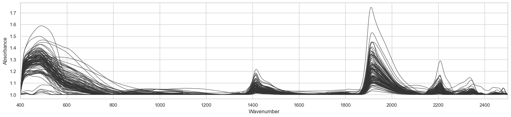
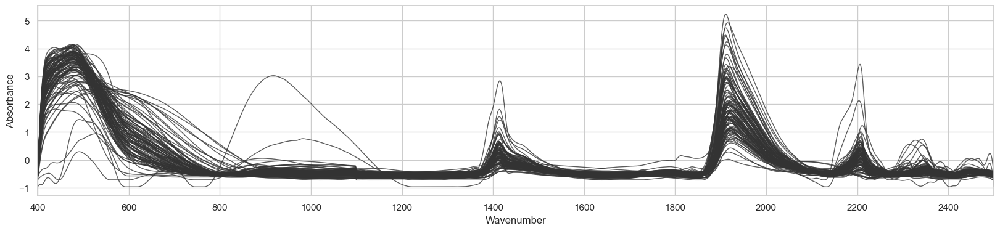
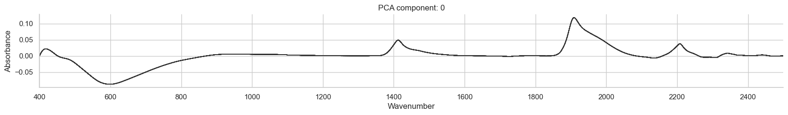
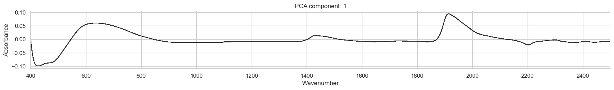
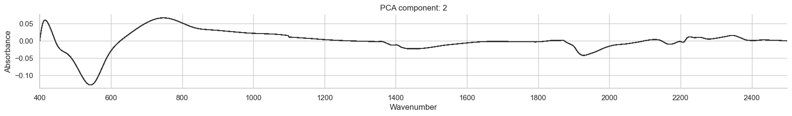
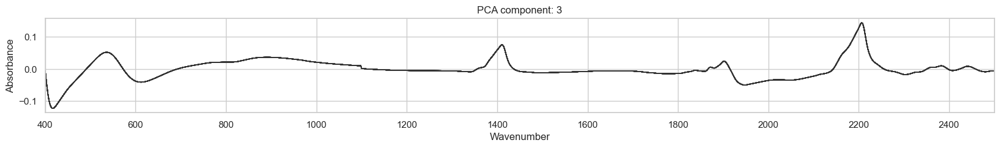
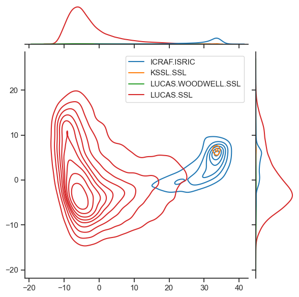
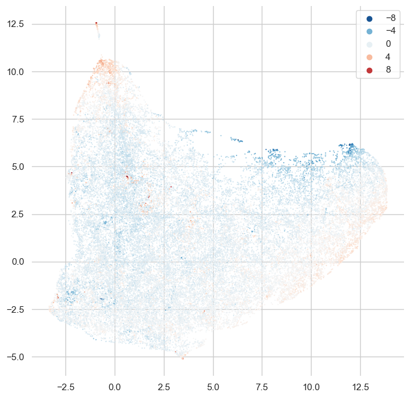

from pathlib import Path
from functools import partial
import numpy as np
from sklearn.pipeline import Pipeline
from sklearn.decomposition import PCA, KernelPCA
from sklearn.preprocessing import StandardScaler
# from sklearn.model_selection import train_test_split
# import timm
# from torcheval.metrics import R2Score
# from torch.optim import lr_scheduler
# from torch import optim, nn
import umap
from lssm.loading import load_ossl
from lssm.visualization import plot_spectra
from lssm.preprocessing import ToAbsorbance, ContinuumRemoval, Log1p, SNV
# from lssm.dataloaders import SpectralDataset, get_dls
# from lssm.callbacks import (MetricsCB, BatchSchedCB, BatchTransformCB,
# DeviceCB, TrainCB, ProgressCB)
# from lssm.transforms import GADFTfm, _resizeTfm, StatsTfm
# from lssm.learner import Learner
import matplotlib.pyplot as plt
import seaborn as sns
from palettable.tableau import Tableau_10VisNIR EDA
Exploratory Data Analysis and outlier detection
Imports
Data loading & preprocessing
analytes = 'k.ext_usda.a725_cmolc.kg'
spectra_type = 'visnir'
data = load_ossl(analytes, spectra_type)
X, y, X_names, smp_idx, ds_name, ds_label = data
X = Pipeline([('to_abs', ToAbsorbance()),
('cr', ContinuumRemoval(X_names))]).fit_transform(X)
# y = Log1p().fit_transform(y)Reading & selecting data ...100%|██████████| 44489/44489 [00:16<00:00, 2640.12it/s]PCA
plot_spectra(X, X_names, sample=100)<Figure size 640x480 with 0 Axes>
plot_spectra(SNV().fit_transform(X), X_names, sample=100)<Figure size 640x480 with 0 Axes>
ds_labelarray(['ICRAF.ISRIC', 'KSSL.SSL', 'LUCAS.SSL', 'LUCAS.WOODWELL.SSL'],
dtype=object)X_centered = (X - X.mean(axis=1, keepdims=True))
n_components = 20
pca = PCA(n_components=n_components)
ds = 2
X_pca = pca.fit_transform(SNV().fit_transform(X[ds_name==ds]))
# X_pca = pca.fit_transform(X_centered[ds_name == 2])
# X_pca = pca.fit_transform(StandardScaler().fit_transform(X))
# X_pca = pca.fit_transform(SNV().fit_transform(X[ds_name == 2]))# n_components = 20
# n_sample = 1000
# ds = 2
# X_centered = (X - X.mean(axis=1, keepdims=True))
# idx = np.random.randint(len(X_centered[ds_name == ds]), size=n_sample)
# pca = KernelPCA(n_components=n_components)
# X_pca = pca.fit_transform(X_centered[ds_name == ds][idx,:])pca.explained_variance_ratio_array([5.41952604e-01, 3.23881616e-01, 3.51052458e-02, 2.80151985e-02,
1.77777725e-02, 1.33735961e-02, 8.43960519e-03, 6.94723136e-03,
6.22437402e-03, 3.68800234e-03, 2.25434766e-03, 2.14942178e-03,
1.69918997e-03, 1.48052371e-03, 9.88398406e-04, 8.57942707e-04,
7.81120220e-04, 6.31589659e-04, 5.02816442e-04, 4.43493314e-04])# Compute cumulated explained variance
cumsum = np.cumsum(pca.explained_variance_ratio_); cumsumarray([0.5419526 , 0.86583422, 0.90093947, 0.92895466, 0.94673244,
0.96010603, 0.96854564, 0.97549287, 0.98171724, 0.98540525,
0.98765959, 0.98980902, 0.99150821, 0.99298873, 0.99397713,
0.99483507, 0.99561619, 0.99624778, 0.9967506 , 0.99719409])for i in range(4):
plot_spectra(pca.components_[i,:][None,:], X_names,
alpha=0.8, color='#333',
title=f'PCA component: {i}',
figsize=(20, 2))<Figure size 640x480 with 0 Axes>



sns.set_theme(style="ticks")
sns.jointplot(
x=X_pca[:,0], y=X_pca[:,1], hue=[ds_label[n] for n in ds_name],
kind="kde",
palette=Tableau_10.mpl_colors
)
Umap
reducer = umap.UMAP(n_neighbors=15)
# embedding = reducer.fit_transform(X_pca[:,:10])
embedding = reducer.fit_transform(X_pca)f, ax = plt.subplots(figsize=(8, 8))
sns.despine(f, left=True, bottom=True)
cmap = sns.diverging_palette(220, 20, as_cmap=True)
sns.scatterplot(x=embedding[:,0], y=embedding[:,1],
# hue=[ds_label[n] for n in ds_name],
hue=X_pca[:,5],
s=2,
alpha=1,
palette = "RdBu_r",
linewidth=0,
ax=ax);